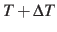

The following options define the configuration for the ``well-tempered'' metadynamics approach [18]:
wellTempered Perform well-tempered metadynamics Context: metadynamics Acceptable values: boolean
Default value: off Description: If enabled, this flag causes well-tempered metadynamics as
described by Barducci et al.[18]
to be performed, rather than standard metadynamics. The parameter
biasTemperature is then required.This feature
was contributed by Li Li (Luthey-Schulten group, Departement of Chemistry, UIUC).
biasTemperature Temperature bias for well-tempered metadynamics Context: metadynamics Acceptable values: positive decimal
Description: When running metadynamics in the long time limit, collective variable space is sampled to a modified
temperature
. In conventional metadynamics, the temperature ``boost'' would
constantly increases with time. Instead, in well-tempered metadynamics must be defined by the
user via biasTemperature. If dumpFreeEnergyFile is enabled, the written PMF includes the
scaling factor
[18]. A careful choice of determines the
sampling and convergence rate, and is hence crucial to the success of a well-tempered metadynamics
simulation.